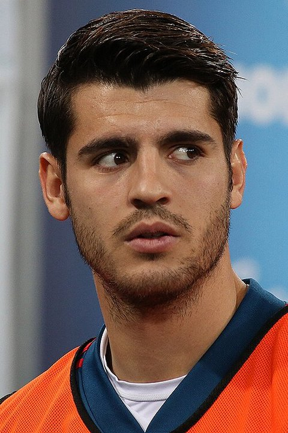

League tier of Spanish-eligible players in 2024/25 and 2025/26
13 moved up a tier and 7 moved down between 2024/25 and 2025/26; the top-9 leagues held 80 players, from 72.
How to read it: the left column is last season’s rung for every player in the pool, the right column this season’s; each ribbon is the players who went from one to the other, its width their number. Green ribbons climb, orange come down, teal are new to the pool, grey are no longer in a covered league. Hover a ribbon for the names.
La Liga
233→227
387 404 → 380 845 minutes
stepping-stone league
2→2
3 679 → 2 732 minutes
top-9 league
72→80
113 739 → 128 412 minutes
other covered league
27→43
41 640 → 67 863 minutes
Players of the pool in each tier, 2024/25 → 2025/26, with the minutes they played there: 334 players last season, 352 this season, outfield players with at least 450 minutes, one row per player (the destinations page counts one row per position group, so a player with two positions counts twice there).
Moved up a tier 13
Martín ZubimendiESP-La Liga → ENG-Premier League
Sergi GómezESP-La Liga → POR-Primeira Liga
Yarek GasiorowskiESP-La Liga → NED-Eredivisie
Yéremy PinoESP-La Liga → ENG-Premier League
Jesus RodríguezESP-La Liga → ITA-Serie A
Luis PérezESP-La Liga → TUR-Süper Lig
and 7 more
Moved down a tier 7
Álex MorenoENG-Premier League → ESP-La Liga
Álvaro CarrerasPOR-Primeira Liga → ESP-La Liga
Carlos SolerENG-Premier League → ESP-La Liga
Dean HuijsenENG-Premier League → ESP-La Liga
Ricardo VisusNED-Eredivisie → POL-Ekstraklasa
Ferran JutglàBEL-Pro League → ESP-La Liga
and 1 more
New to the pool 112
Aleix FebasESP-La Liga
Jonny CastroESP-La Liga
Germán ValeraESP-La Liga
Jacobo RamónITA-Serie A
Adrián de la FuenteESP-La Liga
Víctor MuñozESP-La Liga
and 106 more
No longer in a covered league 94
AngeliñoITA-Serie A
SergiESP-La Liga
Óscar ArandaPOR-Primeira Liga
Sergio AkiemeFRA-Ligue 1
Iñigo MartínezESP-La Liga
Álex SuárezESP-La Liga
and 88 more
“No longer in a covered league” means exactly that: retired, injured for the season, or playing in a league this report does not fetch. The data cannot tell those apart and this page does not guess. “New to the pool” likewise mixes debutants with players returning from leagues outside the set.
How we know
As an analytics question In numbers: every Spanish-eligible player with at least 450 minutes in 2024/25 or 2025/26, placed on the pathway’s tier ladder in each season, and the move between the two.
What we did We took each player’s main league last season and this season, sorted the leagues into the four tiers the atlas uses everywhere — home league, other covered league, stepping stone (the German second tier), top nine — and counted who moved up, who moved down, who appeared and who is no longer in any league we can see.
Sources Season feature tables for both seasons; a player’s league is the one he played most minutes in; 450-minute floor in a season to count as present in it; rungs as defined in the pathways chapter.
What this means
Between the two seasons 13 players moved up a tier, 7 moved down, 112 are new to the pool and 94 are no longer in a covered league. These are counts of one season-to-season change; without earlier seasons there is no baseline for how many moves a typical year shows, so the balance of ups and downs is not a trend.
What this does not show
Why a player moved, whether a move down was a loan or an injury, and players outside the covered leagues.
Data snapshot: FBref tables fetched 14 September 2026, snapshot commit 7cbfe45 · code: src/season_changes.py · status: exploratory, not pre-registered · all limitations
Explore the data
Trajectories
Trajectories 2024/25 → 2025/26 (Spanish-eligible, ≥ 900 minutes in both seasons)
Season-over-season change in goals + assists per 90, league-adjusted. A move counts as up or down beyond ± 0.05; for scale, the standard deviation of this one-season change across the 167 Spanish-eligible players with both seasons is 0.08. Everything inside the band is listed as stable.
Forwards — 17 players: 3 up, 9 stable, 5 down
Moving up · G+A / 90 adj.
Player
League
Min 2024/25 / 2025/26
Change
FJFerran Jutglà
ESP-La Liga
1714 / 1652
+0.120
TMToni Martínez
ESP-La Liga
1012 / 2714
+0.106
MOMikel Oyarzabal
ESP-La Liga
2250 / 2710
+0.053
Moving down · G+A / 90 adj.
Player
League
Min 2024/25 / 2025/26
Change
APAyoze Pérez
ESP-La Liga
1970 / 1124
−0.189
FTFerran Torres
ESP-La Liga
1106 / 1965
−0.157

AMÁlvaro Morata
ITA-Serie A
1099 / 930
−0.151
PDPablo Durán
ESP-La Liga
1394 / 1425
−0.118
SOSamu Omorodion
POR-Primeira Liga
2263 / 1402
−0.069
Midfielders — 85 players: 20 up, 38 stable, 27 down
 Samu Omorodion
Samu Omorodion Lamine Yamal
Lamine Yamal